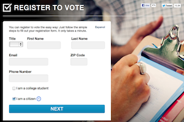
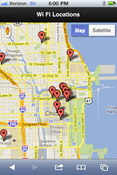
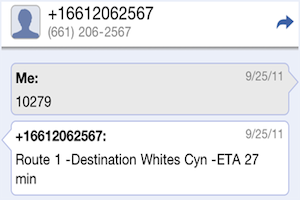

About
My name is Ryan Resella and I grew up in Santa Clarita, CA. In 2012 I worked on the Technology Team at Obama for America. Prior to that I worked at Code for America where I was the Technical Lead and a 2011 inaugural fellow. I also worked at the City of Santa Clarita, CA in the Technnology Services Division as a Senior Information Technology Analyst.
I'm very passionate about technology and building things. I do software engineering in Ruby on Rails. In my spare time I do photography as a hobbie.
Blogs
I have two blogs that when I have time I ramble on. One is for my photography and one is for more personal stuff. Check them out!
Projects
I've done software engineering in private companies, government, non-profit and politics. I work in Ruby and Ruby on Rails is my preferred framework. These are just a small set of the many projects that I've worked on and built.
-

GottaRegister.com
The online voter registration platform for the 2012 Obama for America.
Users would fill out their information and a PDF of a voter registration form would be genereated. The site is built in Ruby on Rails and handled over 10,000 concurrent visitors. In 2012, this site was used to register over 1 million voters.
-

TechFind.me
Techno Finder — is a public technology locator for Chicago.
Lookup public resources via telephone or mobile phone. This applicaiton uses Ruby, Sinatra and Tropo for voice/sms. It pulls data directly from the Chicago data portal that uses the Socrata data store. Techno Finder won 8th place in the Apps for Metro Chicago contest.
-

YakB.us
Yakbus is a real time bus notification system that uses SMS and voice.
For transit systems that have the service available, a user can call or text the five digit bus code on the bus stop. Yakbus will then provide real time arrivals for the bus at the current stop. In 2011, this application won the Grand Prize award in the FCC / Knight Foundation Apps for Communities contest.
Other Projects
- Obama for America
- GottaRegister.com — Online voter registration platform
- Wisonsin Recall Incident Reporting — Polling place incident tracker during 2012 Wisconsin recall
- GOTV Staging Location Report (Soft Reporting) — Reporting tool for get out the vote.
- Code for America
- Intersection — Internal project dashboard
- Brigade — Platform for engaging Brigade members
- JobOps — Veterans job platform that used military occupation codes to help match jobs to Veterans
- SFPark — Ruby wrapper for the San Francisco Park API
- SeeClickFix — Ruby wrapper for the SeeClickFix API
- City of Santa Clarita
- eGraffiti — Web based graffiti tracking database and prevetion system. 2007 Grand Prize Helen Putnam Award Winner.
- ePermits — Online permitting system that interfaced with Tidemark. Allowed citizents to apply for permits on the cities website
- Santa-Clarita.com — City of Santa Clarita web site
I work on a number of open source projects including maintaining many different Ruby gems and various API wrappers such as the Google Civic API.
Check out more of my projects on Github
Photography
Photography in my life has changed several times over the years. I've gone from student, hobbyist, amatuer, and semi professional and back. I started in photography when it was still film. I spent many of my college years inside a dark room developing film. I've printed in both black & white and color prints. I took a long break from photography and digital changed my photography world. Now I can spend hours in LightRoom instead of the dark room. Here's a sample of some of my photography work.
See more of my work on Flickr